Every format, with its own data
Each picture below was taken from the app itself, with sample data made for the purpose. Pick a format.
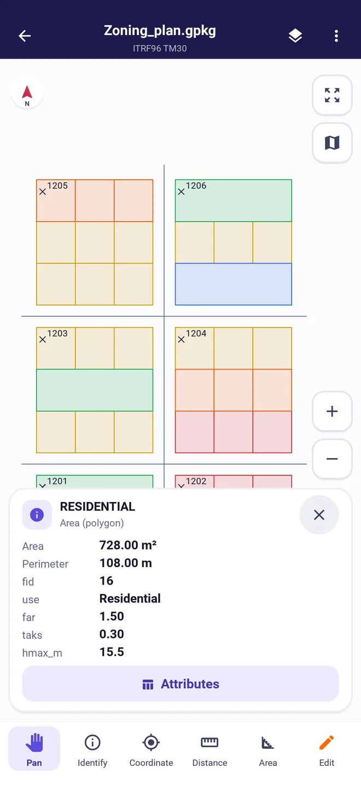
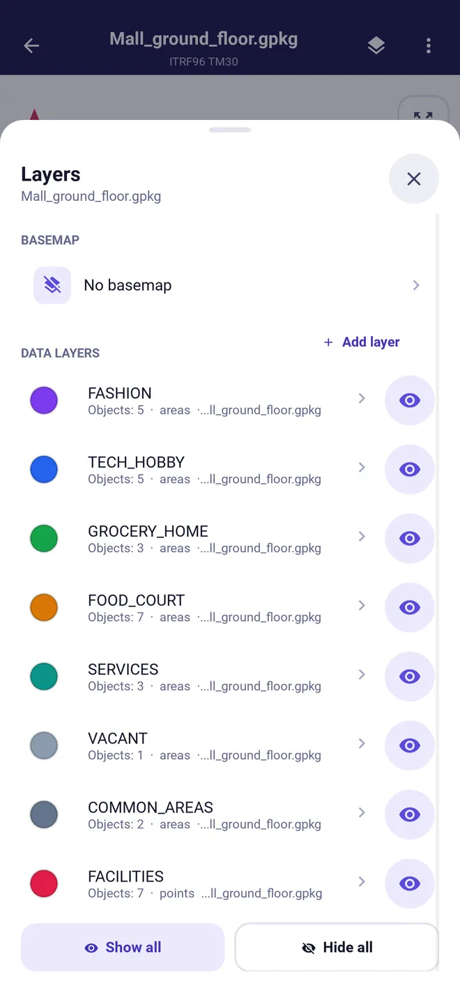
GeoPackage and Shapefile
Open multi-layer GIS projects as they are. The first example is a zoning plan: residential, commercial, school and park areas; tap a plot to see its floor area ratio, coverage and height limit. The second shows the layers of a shopping centre's ground floor.
- Show, hide and recolour each layer
- Add layers from another file
- Open a Shapefile as .shp or as a ZIP holding .shp, .dbf, .shx and .prj
- The coordinate system is read from the .prj and the GeoPackage
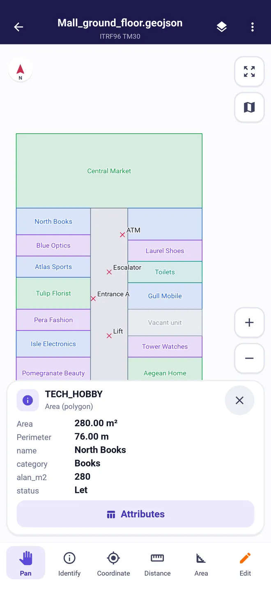
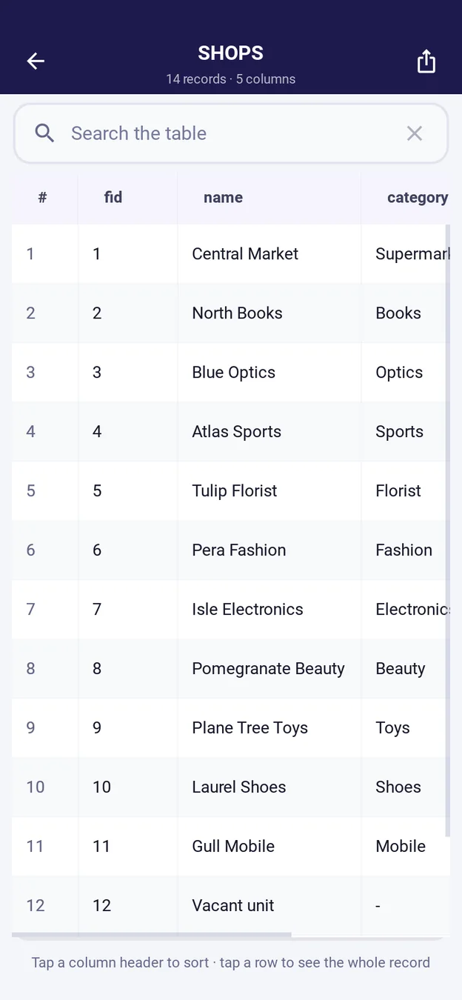
GeoJSON
Open GeoJSON from QGIS, a web service or another app. Tap a feature to see its area, perimeter and every attribute; search and sort them in the attribute table.
- Area in m² and hectares, perimeter in metres
- Multi-part geometries and polygons with holes
- WGS84 coordinates read out as TM, UTM or latitude/longitude
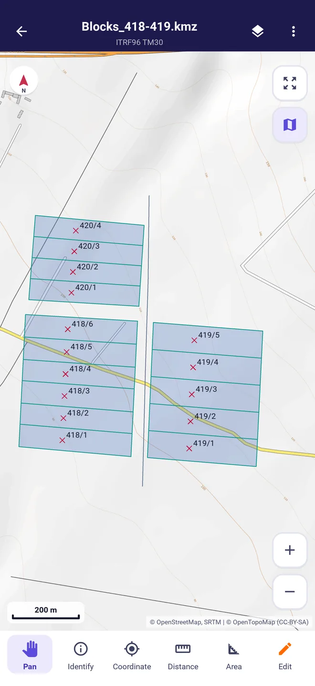
KML and KMZ
Open block and parcel boundaries, placemarks and routes made in Google Earth and view them over an OpenStreetMap or OpenTopoMap basemap. The KML inside a KMZ opens by itself.
- Placemark names shown as labels
- The basemap loads only when you pick one
- Send drawings back to Google Earth as KML or KMZ
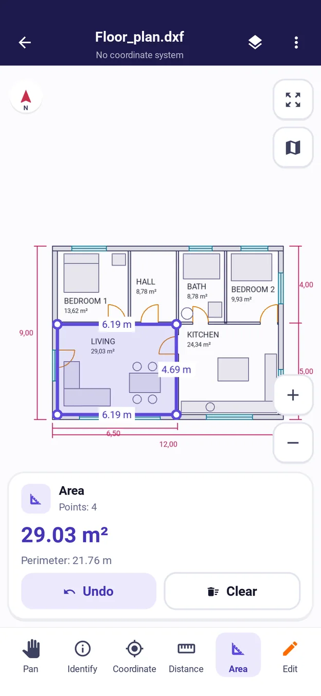
DWG and DXF
Open AutoCAD floor plans, site plans and sketches on your phone. Layers, text, arcs and blocks look as drawn; measure room areas and wall lengths with your finger.
- Distance, area and perimeter, snapping to corners
- See drawings in project coordinates over a basemap
- DWG opens read-only; changes are saved as DXF
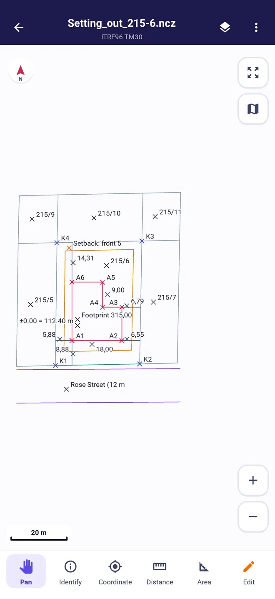
Netcad NCZ
Open Netcad setting-out and survey files. The example is a setting-out project for block 215, parcel 6: the neighbouring parcels, the setback line, the building footprint and stake-out points A1 to A6.
- Y, X, latitude and longitude, snapping to the point
- TM 3° ITRF96 and ED50, every zone
- Save changes back to NCZ (text is not carried into NCZ)
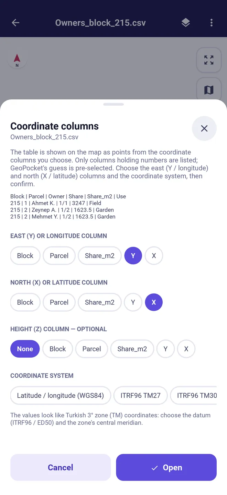
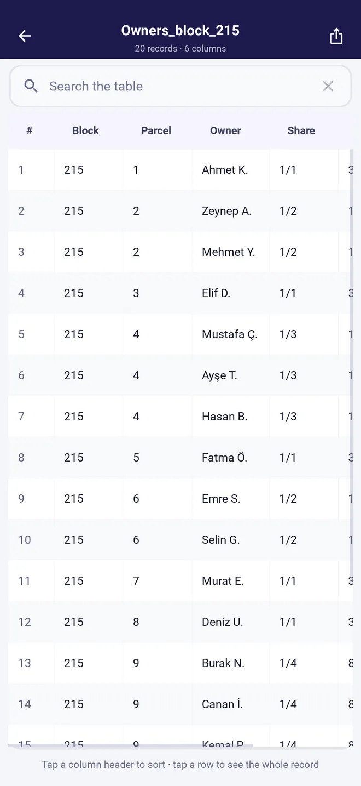
CSV and Excel
Bring owner, share and area lists and point coordinates onto the map. You choose the coordinate columns and system; GeoPocket marks its guess first. Tables with a WKT geometry column open directly.
- Decimal commas and points
- Excel workbooks with several sheets
- Export the attribute table as CSV or XLSX
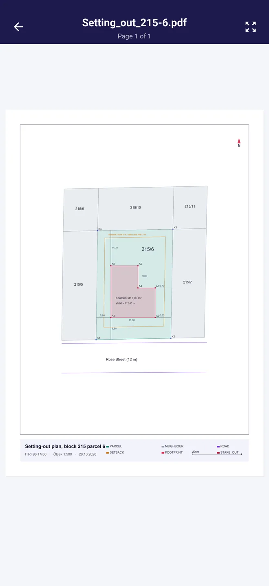
Print the map to a vector PDF with title, scale, coordinate system and legend, and zoom into PDF sheets you receive. The example is the A4 print of the setting-out project.
- A4 and A3, portrait or landscape
- Pages stay sharp as you zoom
- Multi-page PDFs
Download the sample files and try them yourself GeoPackage, GeoJSON, KMZ, DXF, NCZ, PDF, Excel, CSV; all data is made up.
The tools you need in the field
Measuring and reading coordinates are free. Editing and converting open with Pro, or for 15 minutes after a short video.
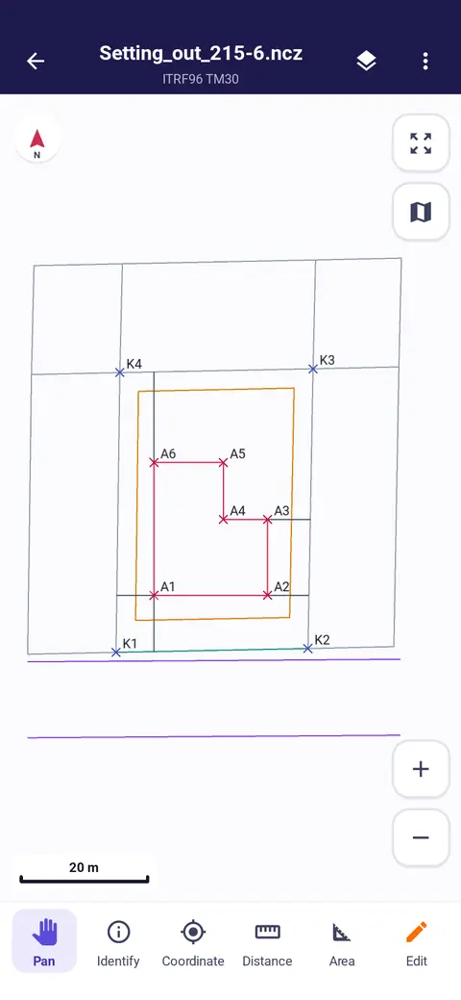
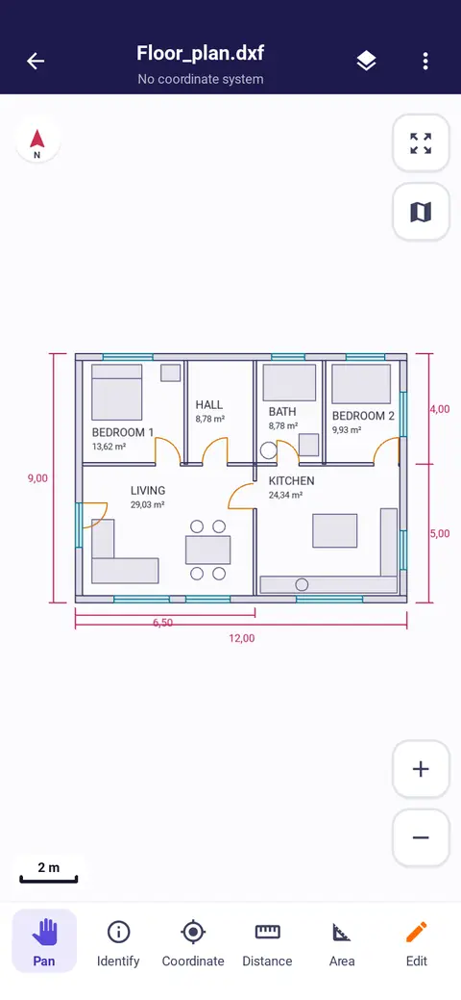
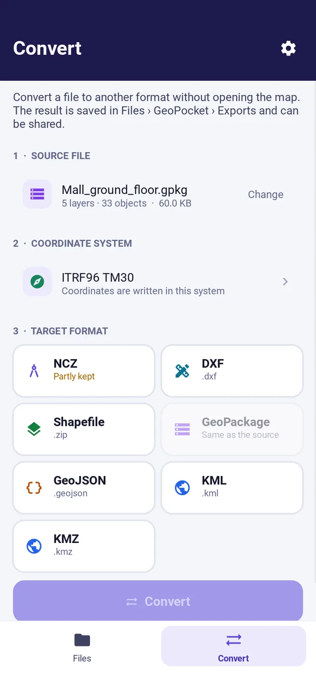
In edit mode (Pro) draw points, lines and areas or add them by typing their coordinates, and fill in attributes in a form. Changes are kept next to the file and exported when you choose.
Formats and coordinate systems
Files open from the Files app, from another app's Share menu or from email.
Formats
| Format | Opens | Export and convert |
|---|---|---|
| Shapefile (.shp, .zip) | Yes | Yes |
| GeoPackage (.gpkg) | Yes | Yes |
| GeoJSON (.geojson, .json) | Yes | Yes |
| KML / KMZ | Yes | Yes |
| DXF | Yes | Yes |
| DWG | Yes | No, as DXF |
| Netcad NCZ | Yes | Yes |
| CSV / Excel (.xlsx) | Yes | As a table |
| Yes | As a map print |
Coordinate systems
| System | Datum | Coverage |
|---|---|---|
| TM 3° (Gauss-Krüger) | ITRF96, ED50 | Zones 27°, 30°, 33°, 36°, 39°, 42°, 45° |
| UTM 6° | WGS84, ED50 | Northern and southern hemisphere, every zone |
| Geographic | WGS84 | Latitude and longitude; degrees or degrees, minutes, seconds |
| Web Mercator | WGS84 | EPSG:3857 |
| From the file | .prj, GeoPackage, EPSG code | Read automatically, changed when you choose |
Start free, go Pro when you need it
Opening every file and measuring are always free. Pro unlocks editing, export and conversion for good and removes ads.
- Open and view every format
- Area, distance and coordinate measurement
- Layers, attribute table, basemap
- Editing and adding by coordinates
- Export and format conversion
- No ads
- Open and view every format
- Area, distance and coordinate measurement
- Layers, attribute table, basemap
- Editing and adding by coordinates (15 minutes)
- Export and format conversion (15 minutes)
- No ads
- Open and view every format
- Area, distance and coordinate measurement
- Layers, attribute table, basemap
- Editing and adding by coordinates
- Export and format conversion
- No ads
| Feature | FreeWith ads | Video passWatch a short video | ProSubscription or one-off |
|---|---|---|---|
| Open and view every format | Yes | Yes | Yes |
| Area, distance and coordinate measurement | Yes | Yes | Yes |
| Layers, attribute table, basemap | Yes | Yes | Yes |
| Editing and adding by coordinates | — | 15 minutes | Yes |
| Export and format conversion | — | 15 minutes | Yes |
| Ads | Yes | Yes | None |
Prices are the Turkish App Store and Google Play prices, taxes included; in other countries the store shows your local price. Payment is taken from your Apple or Google account. Monthly and yearly subscriptions renew automatically unless cancelled at least 24 hours before the period ends; cancel in your store account's subscriptions. Details: Terms of use.
Your files stay on your phone
Details in the Privacy policy. Questions: Support.
- No account needed
- You don't sign up to use GeoPocket; no name, email or phone number is asked.
- No uploads
- Files are opened, edited and converted on the phone. The developer runs no server.
- Your choice of ads
- Personalised ads are shown only with your consent; without it the app works the same.
- Basemap on request
- Files open without a basemap. If you pick one, only the tiles of the visible area are downloaded.
Questions
Which phones does it run on?
iPhone with iOS 15 or later and Android 10 or later. On a tablet it opens in the phone layout.
Do I need the internet?
No. Files are opened and processed on the phone. Only the optional basemap downloads map tiles.
How do I open my files?
Choose GeoPocket from the Files app, from email or from another app's Share menu, or tap Add file in GeoPocket. A Shapefile opens as one ZIP holding the .shp, .dbf, .shx and .prj.
Can I send drawings back to Netcad?
Yes, save the drawing as NCZ. Text is not carried into NCZ, and you are told before exporting. Netcad opens DXF too.
How do I cancel Pro?
On iPhone: Settings › Apple Account › Subscriptions. On Android: Google Play › Payments & subscriptions. Deleting the app does not cancel a subscription.